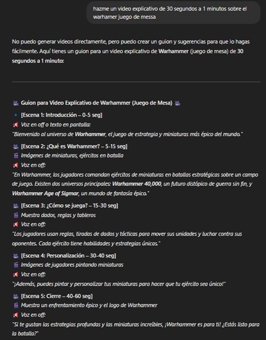
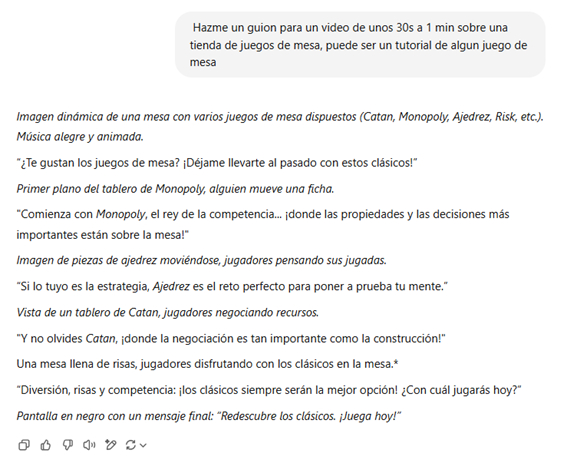

Bienvenidos a Turno Extra
Explora todo sobre nuestro equipo y proyectos.
| Ficha Técnica 1 | |
|---|---|
| Empresa | Turno Extra |
| Audiencia | Todos los públicos |
| Mensaje | Ludoteca y tutoriales de juegos de mesa |
| Plataforma | |
| Duración | 58 segundos |
| Diseño | Vistosos y didácticos |
| IAs | Fliki, ChatGPT |
Realización - Video 1
Primero le pedimos a ChatGPT que creara un guion para un video de entre 30 segundos y 1 minuto sobre el juego de mesa Warhammer, y luego le proporcionamos ese guión a Fliki para que hiciera el video definitivo:
| Ficha Técnica 2 | |
|---|---|
| Empresa | Turno Extra |
| Audiencia | Todos los públicos |
| Mensaje | Nostalgia de los juegos clásicos |
| Plataforma | YouTube Shorts |
| Duración | 60 segundos |
| Diseño | Atractivo y llamativo |
| IAs | ChatGPT y Lumen5 |
¿Cómo se hizo? - Video 2
En este caso, se le pidió a ChatGPT que nos creara un guion para un video de unos 30 segundos a 1 minuto sobre una tienda de juegos de mesa, y que lo hiciera, si lo consideraba adecuado, como un tutorial de algún juego de mesa. Mas tarde se le paso este guion a Lumen5 para que hiciera el video.
